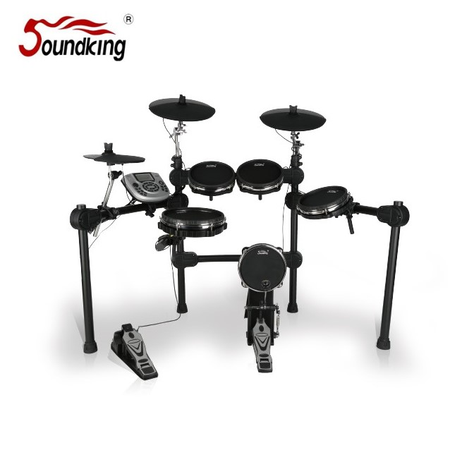

SD220은 전 패드가 Mesh 소재로 구성된 프리미엄 전자드럼 세트입니다. 실제 드럼의 바운스와 소음 억제를 동시에 실현하며, 5 Drum 3 Cymbal 구성에 10인치 Dual-zone 스네어·8인치 Dual-zone 탐·12인치 Dual-zone 림초크 심벌로 실연 드럼에 가까운 플레이 감각을 제공합니다.

전 패드 Mesh 구성의 프리미엄 전자드럼 세트. 실연 드럼의 바운스와 조용한 연습 환경을 동시에 실현합니다.
SD220은 스네어·탐 모두 Mesh 헤드를 채택한 프리미엄 전자드럼 세트입니다. Mesh 헤드는 타격 시 실제 드럼과 유사한 바운스를 제공하면서도 물리적 타격 소음은 크게 줄여 주기 때문에, 야간·아파트 환경의 연습에도 적합합니다.
구성은 5 Drum 3 Cymbal의 풀 세트로, 10인치 Dual-zone Mesh 스네어·8인치 Dual-zone Mesh 탐·12인치 Dual-zone with Rim Choke 크래시/라이드 심벌·10인치 Single-zone 하이햇·8인치 Single-zone 킥 드럼으로 구성됩니다. 내장 모듈은 29개 프리셋 + 12개 사용자 음색·3밴드 EQ·2개 리버브·메트로놈 기능을 제공하며, USB MIDI 인터페이스로 DAW 연동이 가능합니다.
| 모델명 | SD220 |
|---|---|
| 타입 | Electronic Drum (Mesh · 5 Drum 3 Cymbal) |
| SNARE | 10인치 Mesh drum · Dual-zone |
| TOM | 8인치 Mesh drum · Dual-zone |
| CRASH | 12인치 · Dual-zone with Rim Choke |
| RIDE | 12인치 · Dual-zone with Rim Choke |
| HI-HAT | 10인치 · Single-zone |
| KICK | 8인치 · Single-zone |
| Power | DC 12V |
| Module | 29 Preset + 12 User · 3-Band EQ · 2 Reverb · Metronome |
| Interface | USB (MIDI) |
| 권장소비자가 | 1,320,000 원 / 세트 (VAT 포함) |
| 부품 단가 | MODULE 187,000 / SNARE 77,000 / TOM 66,000 / RIDE·CRASH 44,000 / HI-HAT 33,000 / HI-HAT PEDAL 38,500 / KICK 66,000 / KICK PEDAL+HAMMER 48,400 / CABLE 20,900 원 |
※ 본 사양 · 단가는 수입원(현대에이브이씨) 2026-01-01 전자드럼·스탠드 제품 가격표 기준입니다.